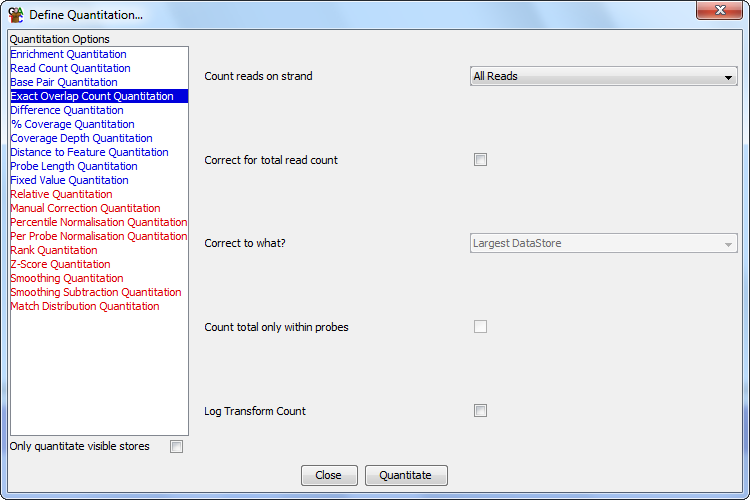

Exact Overlap Quantitation
The exact overlap quantitation is generally used in concert with the
read position probe generator. It is used to count the number of
reads whose positions exactly match those of the probe.

Options
- The types of reads you want to count (All / Forward / Reverse / Unknown)
- Whether you want to correct for the total read count. If you are comparing
different datasets with different total counts then this will normalise the average
count per probe. This correction is done relative to either the largest count in the
stores being quantitated, such that the largest set will show raw counts and the
counts in all other sets will be scaled up proportionally, or per million reads
- If you want the total read count correction to be applied only using reads
inside the current probeset. This would be useful if you wanted to exclude certain
regions of the genome from this correction (eg Chr X/Y).
- If you want to log transform your count. If you have a large range of values
in your count you can calculate them on a log2 scale to make them easier to view.
- If you want to ignore duplicated reads. If you select this option then every
unique read position (start, end and strand must be the same) will only be counted
once and duplicates will be ignored